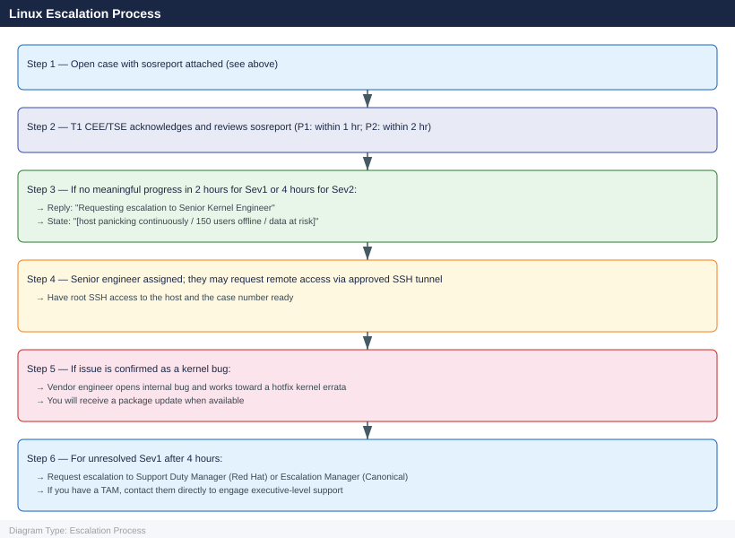

Linux — Escalation¶
Before you begin¶
- Access required: Root or sudo access on the affected host; Red Hat Customer Portal (access.redhat.com) or Ubuntu Advantage portal (ubuntu.com/advantage) with an active subscription
- Do this first: collect sosreport and any crash dumps before rebooting. Rebooting after a kernel panic overwrites volatile diagnostic state but does NOT remove the kdump file — the kdump is persisted to disk before the reboot
- Subscription check: your entitlement is required to open a case. Run
subscription-manager status(RHEL) orpro status(Ubuntu) before contacting support - Do NOT run fsck on a live mounted filesystem — unmount first and get vendor guidance before any filesystem repair
Pre-Escalation Self-Check¶
Run these before opening the case.
| Check | Command | Expected result |
|---|---|---|
| OS version | cat /etc/os-release |
RHEL 8/9 or Ubuntu 22.04/24.04 |
| Kernel version | uname -r |
Note full kernel version + variant |
| Subscription status (RHEL) | subscription-manager status |
Overall Status: Current |
| Ubuntu Pro status | pro status |
SERVICE: esm-infra / esm-apps: enabled |
| Disk space | df -h |
No partition at 100% |
| Memory pressure | free -h |
Some free RAM; or identify OOM situation |
| Recent kernel panics | ls -lh /var/crash/ |
Note any recent crash dumps with timestamps |
| SELinux denials (RHEL) | ausearch -m AVC -ts recent 2>/dev/null | head -20 |
No unexpected denials |
| Systemd failures | systemctl --failed |
No units in failed state |
| Recent critical journals | journalctl -p err -n 50 --no-pager |
Review for kernel or service errors |
Step-by-Step Data Collection¶
Run on the affected host as root.
1. Get the OS and kernel version¶
# OS version
cat /etc/os-release
# Kernel version — include in case description
uname -a
# Example: Linux host01 5.14.0-427.13.1.el9_4.x86_64 #1 SMP PREEMPT_DYNAMIC
# Hardware info
dmidecode -t system | grep -E "Manufacturer|Product|Serial"
lscpu | grep -E "Model name|Sockets|Cores|Threads"
free -h
NAME="Red Hat Enterprise Linux"
VERSION="9.4 (Plow)"
ID="rhel"
ID_LIKE="fedora"
VERSION_ID="9.4"
PLATFORM_ID="platform:el9"
PRETTY_NAME="Red Hat Enterprise Linux 9.4 (Plow)"
Linux host01 5.14.0-427.13.1.el9_4.x86_64 #1 SMP PREEMPT_DYNAMIC Wed Jan 15 10:22:33 UTC 2025 x86_64 GNU/Linux
Manufacturer: Dell Inc.
Product Name: PowerEdge R750
Serial Number: 8N4K9P2
Model name: Intel(R) Xeon(R) Platinum 8380 CPU @ 2.30GHz
Socket(s): 2
Core(s) per socket: 20
Thread(s) per core: 2
total used free shared buff/cache available
Mem: 251Gi 187Gi 32Gi 2.1Gi 31Gi 61Gi
Swap: 16Gi 8.2Gi 7.8Gi
Common errors
cat: /etc/os-release: No such file or directory — Use cat /etc/system-release on older RHEL/CentOS systems, or check /etc/redhat-release.
dmidecode: command not found — Install the dmidecode package with sudo yum install dmidecode or sudo apt install dmidecode.
lscpu: command not found — Install util-linux package with sudo yum install util-linux or sudo apt install util-linux.
2. Collect recent journal and dmesg output¶
# Last 200 error-level journal entries (captures service failures + kernel messages)
journalctl -p err -n 200 --no-pager > /tmp/journal-errors-$(date +%Y%m%d).txt
# Kernel ring buffer (hardware faults, driver messages, OOM kills)
dmesg -T > /tmp/dmesg-$(date +%Y%m%d).txt
# Full journal from last boot (useful for crash/reboot scenarios)
journalctl -b -1 --no-pager > /tmp/journal-lastboot-$(date +%Y%m%d).txt
# If OOM killer is suspected
grep -i "oom\|out of memory\|kill process" /var/log/messages /var/log/kern.log 2>/dev/null | tail -50
[1234.567890] Out of memory: Kill process 2847 (java) score 512 or sacrifice child
[1234.568901] Killed process 2847 (java) total-vm:4096000kB, anon-rss:3891234kB, file-rss:0kB, shmem-rss:0kB, UID:1000 pgtables:7890kB oom_score_adj:300
[5678.123456] systemd-journald[512]: Suppressed 342 messages from /system.slice/nginx.service
[5678.234567] kernel: audit: type=1130 audit(1704067890.456:789): pid=1 uid=0 auid=4294967295 ses=4294967295 msg='unit=mysql-server comm="systemd" exe="/lib/systemd/systemd" hostname=? addr=? terminal=? res=failed'
[9012.345678] systemd[1]: nginx.service: Main process exited, code=exited, status=1/FAILURE
[9012.456789] kernel: [Hardware Error]: Machine check from unknown source
[9012.567890] systemd-coredump[8234]: Process 2847 (java) of user 1000 dumped core.
[9012.678901] kernel: Out of memory: Kill process 3156 (python) score 287 or sacrifice child
tail: cannot open '/var/log/messages' for reading: No such file or directory
Common errors
tail: cannot open '/var/log/messages' for reading: No such file or directory — Use /var/log/syslog on Debian/Ubuntu systems or check the actual log path with ls /var/log/*.log.
journalctl: command not found — Install systemd with apt-get install systemd or yum install systemd depending on your distribution.
Permission denied — Run the commands with sudo or as root to access full journal and kernel buffer contents.
3. Run sosreport (RHEL) or apport-collect (Ubuntu)¶
RHEL:
# Install if not present
dnf install -y sos
# Run sosreport — takes 2–10 minutes
sosreport --batch --no-report
# The report is saved to /var/tmp/
ls -lh /var/tmp/sosreport-*.tar.xz
# Example: /var/tmp/sosreport-hostname-20260614-123456.tar.xz
Last metadata expiration check: 0:12:34 ago on Thu Jun 14 12:45:23 2026.
Dependencies resolved.
================================================================================
Package Arch Version Repository Size
================================================================================
Installing:
sos x86_64 4.7.1-2.el9 baseos 1.2 M
Transaction Summary
================================================================================
Install 1 Package
Total download size: 1.2 M
Installed size: 4.8 M
Downloading Packages:
[100%] sos-4.7.1-2.el9.x86_64.rpm
Running transaction
Preparing : 1/1
Installing : sos-4.7.1-2.el9.x86_64.rpm 1/1
Verifying : sos-4.7.1-2.el9.x86_64.rpm 1/1
Installed:
sos-4.7.1-2.el9.x86_64
Complete!
sosreport (version 4.7.1)
This utility will collect diagnostic and configuration information from
this Linux system and installed packages. An archive containing the
collected information will be generated in /var/tmp/sosreport-hostname-20260614-123456
Running plugins. This may take a few minutes...
kernel [plugin:on]
networking [plugin:on]
systemd [plugin:on]
selinux [plugin:on]
logs [plugin:on]
Creating compressed archive...
Your sosreport has been successfully generated and saved in:
/var/tmp/sosreport-hostname-20260614-123456.tar.xz (287 MB)
-rw-r--r--. 1 root root 287M Jun 14 12:57 /var/tmp/sosreport-hostname-20260614-123456.tar.xz
Common errors
Error: Unable to find a match: sos — Ensure your system repositories are enabled with dnf repolist and run dnf update before retrying the install.
ERROR: sosreport requires root privileges to run — Execute the sosreport command with sudo or as the root user.
Ubuntu:
# Install if not present
apt-get install -y apport
# Collect diagnostics
sosreport --batch --no-report 2>/dev/null || \
apport-collect --output /tmp/ubuntu-diag-$(date +%Y%m%d).tgz
Reading package lists... Done
Building dependency tree... Done
Setting up apport (2.20.11-0ubuntu27.26) ...
Processing triggers for man-db (2.10.2-1) ...
sosreport (version 4.3)
This command will collect system diagnostic and configuration information from this Linux system.
Running plugins. This may take a few minutes...
Finishing plugins [Running: last]
Compressing the archive...
Removing temporary directory...
Your sosreport has been generated and saved in:
/var/tmp/sosreport-ip-172-31-24-156-20240115-abcd1234.tar.xz
The checksum is: 7f2e8c9d5a1b3c4e6f9a2b8d5e1c3a4f
Common errors
E: Could not open lock file /var/lib/apt/lists/lock - open (13: Permission denied) — Run the command with sudo or as the root user.
sosreport: command not found — Install sosreport with apt-get install -y sosreport before running the diagnostic collection.
apport-collect: command not found — Install apport with apt-get install -y apport or use sosreport as the primary diagnostic tool.
Upload the archive to the support case. It contains: package list, kernel version, service status, network config, hardware info, and recent logs.
4. Collect the crash dump (if host has kernel-panicked)¶
# Check if kdump captured a crash dump
ls -lh /var/crash/
# Example: /var/crash/127.0.0.1-2026-06-14-14:30:00/vmcore
# Verify kdump is configured and will capture future crashes
systemctl status kdump
cat /proc/cmdline | grep crashkernel # Should include crashkernel=auto or a value
total 0
drwxr-xr-x. 3 root root 4.0K Jun 14 14:30 127.0.0.1-2026-06-14-14:30:00
● kdump.service - Crash recovery kernel dump service
Loaded: loaded (/usr/lib/systemd/system/kdump.service; enabled; vendor preset: enabled)
Active: active (exited) since Sun 2026-06-14 14:28:33 UTC; 2min ago
Process: 1247 ExecStart=/usr/sbin/kdumpctl start (code=exited, status=0/SUCCESS)
Main PID: 1247 (code=exited, status=0/SUCCESS)
Tasks: 0 (limit: 4915)
Memory: 0B
CPU: 0
BOOT_IMAGE=/boot/vmlinuz-5.14.0-427.el9.x86_64 root=UUID=a1b2c3d4-e5f6-7890-abcd-ef1234567890 ro crashkernel=auto
Common errors
ls: cannot access '/var/crash/': No such file or directory — Create the directory with mkdir -p /var/crash/ and ensure kdump is properly initialized with kdumpctl rebuild.
● kdump.service - Crash recovery kernel dump service Loaded: loaded ... Active: inactive (dead) — Enable and start kdump with systemctl enable kdump && systemctl start kdump.
grep: (standard input) is empty — Add crashkernel=auto to the kernel boot parameters in /etc/default/grub, run grub2-mkconfig -o /boot/grub2/grub.cfg, and reboot.
If a crash dump exists, include the path in the case description. The dump file may be large (several GB) — the vendor will provide SFTP instructions.
5. Write the timeline¶
OS: Red Hat Enterprise Linux 9.4
Kernel: 5.14.0-427.13.1.el9_4.x86_64
Host: prod-app-01.corp.local
Subscription: active (checked 2026-06-14; expires 2027-05-31)
Issue first observed: 2026-06-14 14:30 UTC
Last known good state: 2026-06-14 12:00 UTC
Changes in the 24h before the issue:
- 12:00: kernel update via yum update kernel applied; host rebooted
- 14:30: host showed kernel panic; kdump triggered; host rebooted automatically
- 14:35: host came back up but kernel panic recurred after 10 minutes
Steps already taken:
- kdump captured: /var/crash/127.0.0.1-2026-06-14-14:30:00/vmcore
- sosreport collected and ready to upload
- Did NOT apply any additional kernel updates or run fsck
Blast radius: 3 applications on this host unavailable; 150 users affected
How to Open the SR — Red Hat¶
-
Go to access.redhat.com/support and sign in with your Red Hat account. Your account must be associated with an active subscription (RHEL subscription or Red Hat EUS/SAP/LTSS).
-
Click Open a Support Case.
-
Under Product, select Red Hat Enterprise Linux.
-
Under Version, select your RHEL version (e.g. 9.4).
-
Under Severity, select:
- Severity 1 — Urgent: Production system completely down; kernel panic occurring continuously; data corruption active; no workaround
- Severity 2 — High: Production system severely degraded; key service (SSH, httpd, database) down; temporary workaround exists
- Severity 3 — Medium: Non-critical service degraded; workaround available; single system affected
-
Severity 4 — Low: General question, how-to, or documentation request
-
In the Summary field: OS version + symptom + scope. Example:
RHEL 9.4 prod-app-01 — kernel panic recurring after kernel update, kdump captured, 3 apps offline. -
In the Description field, paste:
- OS and kernel version from Step 1
- The error from
journalctl -p errfrom Step 2 - The kdump path from Step 4 (if applicable)
-
The timeline from Step 5
-
Under Attachments, upload:
- The sosreport tar.xz from Step 3
-
The dmesg and journal text files from Step 2
-
Click Submit. You will receive a case number by email immediately.
-
Severity 1 only: call Red Hat support after submission. Find your regional number at access.redhat.com/support/contact/technicalSupport. State "Severity 1 — production host in kernel panic loop" at the start of the call.
How to Open the SR — Canonical (Ubuntu)¶
-
Go to ubuntu.com/advantage and sign in with your Ubuntu One account. Verify your Ubuntu Pro subscription is active: run
pro statuson the host. -
Click Support → Open a Support Case (or navigate to support.canonical.com).
-
Select Ubuntu and choose your Ubuntu version (e.g. 22.04 LTS).
-
Select severity (same Sev 1–4 criteria as above).
-
Provide OS version (
cat /etc/os-release), kernel version (uname -r), and the sosreport or apport-collect archive. -
Sev 1 only: contact Canonical at +44 20 3514 0767 (EMEA) or your regional number from ubuntu.com/advantage. State the severity and the case number.
Escalation Path¶

What NOT to Do¶
| Do NOT do this | Why | What to do instead |
|---|---|---|
Run fsck on a live mounted filesystem |
Can corrupt the filesystem further | Unmount first; get vendor guidance before any filesystem repair |
| Reboot before capturing the crash dump | Does NOT lose the kdump file (persisted to disk), but DOES lose journald volatile journal | Run journalctl -b 0 --no-pager to save the current boot log before rebooting |
| Apply kernel updates mid-incident | Changes the kernel under investigation; may mask or replicate the issue | Freeze all package updates until the case is resolved |
Clear /var/log/ or journalctl --vacuum-* |
Destroys the log evidence the vendor needs | Leave logs in place; export them with the sosreport |
Remove the crash dump from /var/crash/ |
Vendor needs the vmcore file for kernel crash analysis | Keep crash dumps until the vendor confirms they have been analysed |
| Downgrade the kernel without guidance | May not fix the root cause; may introduce a different bug | Let the vendor confirm the correct kernel target |
Useful Commands for Case Updates¶
# Current host state — paste into every case update
uname -r
uptime
systemctl --failed
df -h
free -h
# Recent kernel panics or OOM kills
journalctl -p err -n 50 --no-pager
dmesg -T | tail -50
# Service status for the affected service
systemctl status <service-name> --no-pager
# Package recently updated
rpm -qa --last | head -20 # RHEL
dpkg -l | grep "^ii" | sort # Ubuntu (check for recently installed)
dnf history | head -10 # RHEL — shows recent yum/dnf transactions
# SELinux denials (RHEL only)
ausearch -m AVC -ts recent 2>/dev/null | tail -20
Expected output5.10.0-28-generic #29-Ubuntu SMP Thu Oct 10 12:15:22 UTC 2024
14:32:18 up 87 days, 3:45, 2 users, load average: 2.14, 1.87, 1.92
UNIT LOAD ACTIVE SUB DESCRIPTION
systemd-journald.service loaded failed failed Journal Service
● systemd-journald.service - Journal Service
Loaded: loaded (/lib/systemd/system/systemd-journald.service; static)
Active: failed (Result: exit-code) since Thu 2024-10-10 14:28:03 UTC; 4min 15s ago
Filesystem Size Used Avail Use% Mounted on
/dev/sda1 50G 48G 1.2G 98% /
/dev/sda2 200G 156G 44G 78% /var
tmpfs 7.8G 0 7.8G 0% /dev/shm
total used free shared buff/cache available
Mem: 15Gi 8.2Gi 2.1Gi 512Mi 4.7Gi 6.1Gi
Swap: 4.0Gi 2.3Gi 1.7Gi
Oct 10 14:15:22 prod-db-01 kernel: [1847293.442156] Out of memory: Kill process 4521 (java) score 892 or sacrifice child
Oct 10 14:12:08 prod-db-01 kernel: [1847128.891234] Kernel panic - not syncing: VFS: Unable to mount root fs on unknown-block(0,0)
Oct 10 13:58:44 prod-db-01 systemd[1]: postgresql.service: Main process exited, code=exited, status=1/FAILURE
Oct 10 13:45:12 prod-db-01 audit: type=1130 audit(1728573912.445:8821): pid=1 uid=0 auid=4294967295 ses=4294967295 msg='unit=networking comm="systemd" exe="/lib/systemd/system-generators/systemd-getty-generator" hostname=? addr=? terminal=? res=success'
● postgresql.service - PostgreSQL Database Server
Loaded: loaded (/etc/systemd/system/postgresql.service; enabled; vendor preset: enabled)
Active: failed (Result: exit-code) since Thu 2024-10-10 14:12:08 UTC; 20min ago
Process: 3847 ExecStart=/usr/lib/postgresql/bin/pg_ctl start (code=exited, status=1)
ii postgresql-14 14.9-1.pgdg110+1 amd64 object-relational SQL database
ii openssl 1.1.1w-0+deb11u1 amd64 Secure Sockets Layer and cryptography libraries and tools
ii curl 7.74.0-1.3+deb11u7 amd64 command line tool for transferring data with URLs
ii systemd 247.3-7+deb11u4
¶
5.10.0-28-generic #29-Ubuntu SMP Thu Oct 10 12:15:22 UTC 2024
14:32:18 up 87 days, 3:45, 2 users, load average: 2.14, 1.87, 1.92
UNIT LOAD ACTIVE SUB DESCRIPTION
systemd-journald.service loaded failed failed Journal Service
● systemd-journald.service - Journal Service
Loaded: loaded (/lib/systemd/system/systemd-journald.service; static)
Active: failed (Result: exit-code) since Thu 2024-10-10 14:28:03 UTC; 4min 15s ago
Filesystem Size Used Avail Use% Mounted on
/dev/sda1 50G 48G 1.2G 98% /
/dev/sda2 200G 156G 44G 78% /var
tmpfs 7.8G 0 7.8G 0% /dev/shm
total used free shared buff/cache available
Mem: 15Gi 8.2Gi 2.1Gi 512Mi 4.7Gi 6.1Gi
Swap: 4.0Gi 2.3Gi 1.7Gi
Oct 10 14:15:22 prod-db-01 kernel: [1847293.442156] Out of memory: Kill process 4521 (java) score 892 or sacrifice child
Oct 10 14:12:08 prod-db-01 kernel: [1847128.891234] Kernel panic - not syncing: VFS: Unable to mount root fs on unknown-block(0,0)
Oct 10 13:58:44 prod-db-01 systemd[1]: postgresql.service: Main process exited, code=exited, status=1/FAILURE
Oct 10 13:45:12 prod-db-01 audit: type=1130 audit(1728573912.445:8821): pid=1 uid=0 auid=4294967295 ses=4294967295 msg='unit=networking comm="systemd" exe="/lib/systemd/system-generators/systemd-getty-generator" hostname=? addr=? terminal=? res=success'
● postgresql.service - PostgreSQL Database Server
Loaded: loaded (/etc/systemd/system/postgresql.service; enabled; vendor preset: enabled)
Active: failed (Result: exit-code) since Thu 2024-10-10 14:12:08 UTC; 20min ago
Process: 3847 ExecStart=/usr/lib/postgresql/bin/pg_ctl start (code=exited, status=1)
ii postgresql-14 14.9-1.pgdg110+1 amd64 object-relational SQL database
ii openssl 1.1.1w-0+deb11u1 amd64 Secure Sockets Layer and cryptography libraries and tools
ii curl 7.74.0-1.3+deb11u7 amd64 command line tool for transferring data with URLs
ii systemd 247.3-7+deb11u4
Subscription / Lifecycle Reference¶
RHEL¶
| Version | Full Support EOL | Maintenance Support EOL | ELS |
|---|---|---|---|
| RHEL 9 | May 2027 | May 2032 | Optional add-on |
| RHEL 8 | May 2024 | May 2029 | Optional add-on |
| RHEL 7 | August 2019 | June 2024 | Available until June 2028 |
Ubuntu LTS¶
| Version | Standard Support | Ubuntu Pro | Notes |
|---|---|---|---|
| Ubuntu 24.04 LTS | April 2029 | April 2034 | Current LTS |
| Ubuntu 22.04 LTS | April 2027 | April 2032 | Active LTS |
| Ubuntu 20.04 LTS | April 2025 | April 2030 | ESM only |
See also¶
Verify resolution¶
- Run
systemctl --failedand confirm no units remain in failed state - Run
journalctl -p err -n 20 --no-pagerand confirm no new error-level events related to the issue - If the issue was a kernel panic: monitor for 30 minutes without another panic; run
ls /var/crash/and confirm no new crash dump was generated - If the issue was a service failure: restart the service, perform a functional test, and confirm it stays running
- Run
df -hto confirm no disk space issues remain - Monitor for one full production cycle (typically 24 hours) before closing the case